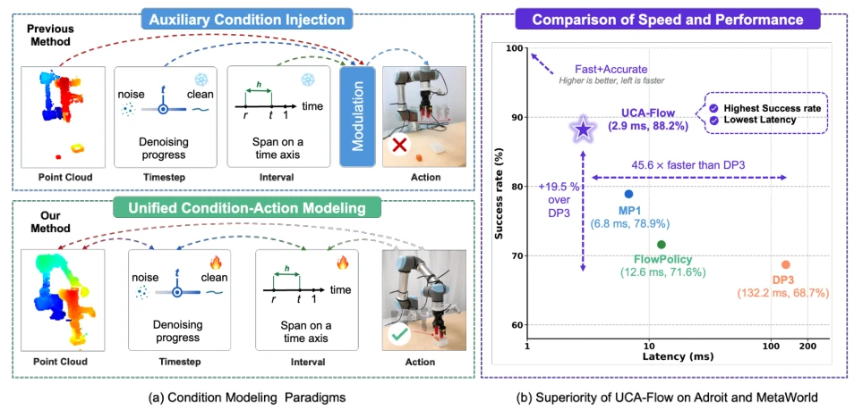
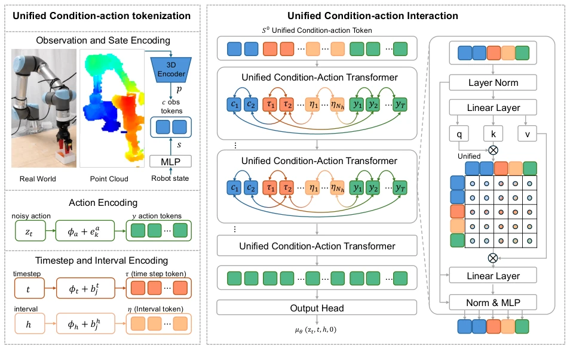
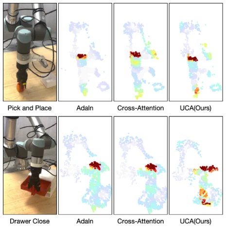
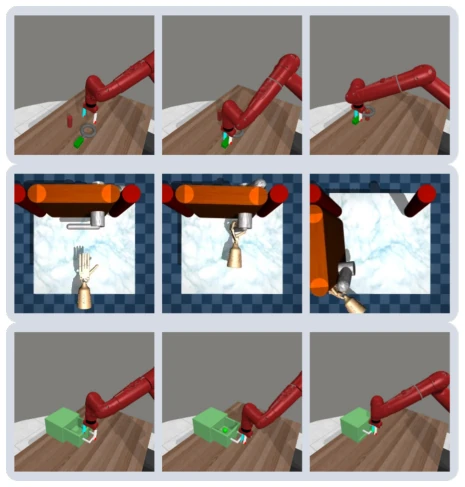
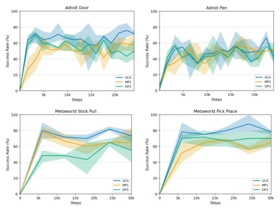
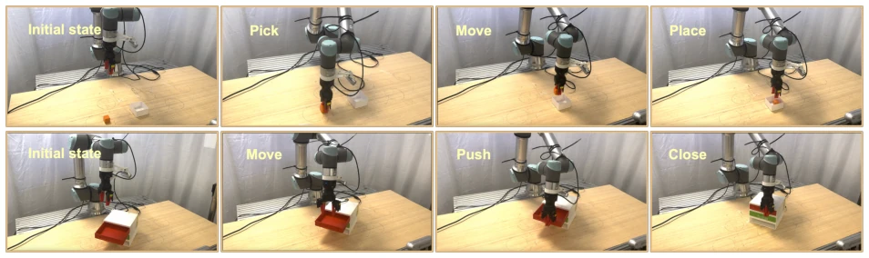

This paper is practically a 'gospel' for efficiency-oriented researchers; UCA-Flow integrates conditions (observations) and actions within a single Transformer for close interaction, rather than injecting conditions as external signals as traditional methods do. The results are indeed impressive; the success rate is 9.3 percentage points higher than MP1, and the speed is significantly improved, 45 times faster than DP3. However, do not be overly optimistic; it still focuses on 'one-step' generation. Long-horizon planning? Sorry, not mentioned in the paper. Real-world experiments were limited to opening drawers and grasping; although stable, there is still a gap from complex industrial scenarios. Overall, it is a clever approach that masters 'unified modeling,' but do not expect it to solve all philosophical problems of embodied intelligence, as the 45x speed behind might stem from a more compact model rather than a more profound algorithm.
研究动机Motivation
机器人操作需要在严格延迟约束下生成可执行动作，这对策略的准确性和效率提出了双重挑战。尽管 Diffusion Policy (Chi et al., 2025) 和 Flow Matching (Zhang et al., 2025) 等生成式策略展现了潜力，但它们仍面临效率与性能的瓶颈。现有工作大多遵循“条件到动作”的范式，将观测和时间步编码为外部辅助信号，通过 AdaLN 或 Cross-Attention 注入动作生成骨干网络，而非作为一等公民（first-class tokens）与动作动态交互。这种条件注入瓶颈（condition-injection bottleneck）在一步动作生成中尤为受限。MP1 (Sheng et al., 2025) 虽提升了速度，但仍未解决条件与动作的联合表示学习问题。因此，需要一种能统一建模条件与动作的框架，使条件表示能根据生成阶段动态重构，从而在紧凑模型下实现高性能。
Robot manipulation requires generating executable actions under strict latency constraints, posing a dual challenge to the accuracy and efficiency of policies. Although generative policies such as Diffusion Policy (Chi et al., 2025) and Flow Matching (Zhang et al., 2025) have demonstrated potential, they still face bottlenecks in efficiency and performance. Existing work mostly follows the 'condition-to-action' paradigm, encoding observations and timesteps as external auxiliary signals, injecting them into the action generation backbone network via AdaLN or Cross-Attention, rather than as first-class tokens dynamically interacting with actions. This condition-injection bottleneck is particularly limiting in one-step action generation. Although MP1 (Sheng et al., 2025) improved speed, it still did not solve the problem of joint representation learning for conditions and actions. Therefore, a framework capable of unified modeling of conditions and actions is needed, enabling condition representations to be dynamically reconstructed according to the generation stage, thereby achieving high performance under a compact model.

Figure 1 Motivation of UCA-Flow. (a) Existing policies often treat condition as auxiliary condition signals. Unified condition-action modeling enables conditions and actions to evolve together, allowing condition representations to adapt to the current generation stage and action. (b) UCA-Flow achieves a superior efficiency-performance trade-off, delivering the highest success rate with the lowest latency on Adroit and MetaWorld.
The overall process of UCA-Flow is to uniformly encode observation history, timesteps, interval lengths, and noise action trajectories into a Token sequence. First, through Unified Condition-Action Tokenization, point cloud features, robot states, timestep embeddings, and interval embeddings are concatenated with action Tokens into a single sequence S0. The core innovation lies in the Unified Condition-Action Transformer, which no longer treats conditions as external modulation signals but allows condition Tokens and action Tokens to interact via multi-head self-attention within the same Transformer block. This means condition representations are no longer fixed but are dynamically updated with the depth of action generation, forming an 'action-condition-action' information flow. Additionally, the model introduces an improved dual-pass supervision scheme, optimizing both average velocity u and instantaneous velocity v during training, utilizing Jacobian-vector products to construct a composite velocity objective, thereby enhancing representation stability. During inference, only a single forward pass is required to directly predict the final action from z1, achieving efficient one-step generation.

Figure 2 Overview of UCA-Flow. Observation, timestep, interval, and noisy action are unified as condition-action tokens and processed by a Unified Condition-Action Transformer to predict the interval-aware velocity.

Figure 3 Gradient-based saliency visualization on real-world tasks. UCA-Flow highlights more task-relevant regions, including the end-effector, target object, and upper arm joints, compared with the auxiliary condition-injection AdaLN and Cross-Attention.
Experiments were conducted on 37 Adroit and MetaWorld simulation tasks and 2 real-world tasks. Baselines include DP3, Simple DP3, FlowPolicy, and MP1. Evaluation metrics include Success Rate and Inference Latency. UCA-Flow achieves an average success rate of 88.2%, an improvement of 9.3 percentage points over the strongest baseline MP1, with significant advantages especially on Medium/Hard tasks. Inference latency is only 2.9ms, 45.6 times faster than DP3 and 4.3 times faster than FlowPolicy. Ablation experiments show that removing DualPass supervision or replacing it with Cross-Attention/AdaLN leads to a significant drop in success rate (e.g., Shelf Place drops from 74% to 32.3%), confirming the effectiveness of unified modeling. In real-world experiments, Pick & Place achieved a success rate of 65% (MP1 55%), and Drawer Close reached 100%, verifying the model's robustness in noisy environments.

Figure 4 Representative simulated rollouts. Rows corre- spond to Assembly, Adroit Door, and Drawer Close, and columns show successive stages of each execution. The trajectories require different interaction patterns: align- ing and inserting an object, coordinating a dexterous hand with a door handle, and maintaining contact while pushing a drawer closed. UCA-Flow completes all three sequences from approach to task completion using one- step action generation.

Figure 5 Training success curves on Adroit and Meta-World. Solid lines show success rates and shaded regions indicate variation across seeds. Using the top-five-checkpoint mean per seed, UCA-Flow outperforms the baselines on all four tasks, including an approximately 5% gain on Adroit Pen.

Figure 6 Real-world execution sequences. The top row shows Pick and Place progressing from the initial scene through grasping and transport to placement in the target box. The bottom row shows Drawer Close progressing from approach to contact, sustained pushing, and full closure. These sequences illustrate that UCA-Flow maintains task-relevant control through distinct free-space and contact-rich phases despite sensing and execution uncertainty.